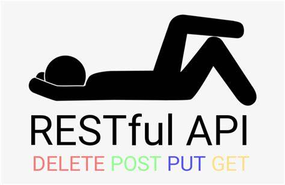

# WEB ROADMAP --- ## Présentateur Mamadou Moustapha Diallo Dévelopeur Web Passionné d'IA et de Cybersécurité --- ## Overview <div class="technos"> <div class='techno'></div> <div class='techno'></div> <div class='techno'><img class='img-50 rounded-full' src='_images/image-6.png' /></div> <div class='techno'></div> <div class='techno'><img class='img-50' src='_images/git.svg' /></div> <div class='techno'><img class='img-50' src='_images/github.png' /></div> </div> --- ## Overview <div class="technos"> <div class='techno'></div> <div class='techno'></div> <div class='techno'></div> <div class='techno'></div> <div class='techno'></div> </div> --- ## Introduction --- ## 01 - WEB Essentials --- ### INTERNET > Réseau des réseaux | DARPA | 1960 --- ### SERVICES D'INTERNET --- ### WEB Collection de pages | Tim Berners-Lee | 1989 --- ### Protocole HTTP  --- ### Uniform Resource Locator (URL)  --- ### Architecture Client / Serveur  --- ### Client --- ### Serveur --- ### C'est parti 😋😋😋 --- ## 02 - HTML --- ### HyperText Markup Language Tim Berners-Lee en 1991 HTML5 | W3C --- ### Exemple ```html <!DOCTYPE html> <html> <head> <title>First HTML Code</title> </head> <body> <h2>Bienvenue au FODR</h2> <p>Hello, LABE !</p> </body> ``` --- ### Fonctionnalités du HTML * Facile à prendre en main * Ne dépend d'aucune plateforme * Possibilité d'ajouter des images, audio, vidéos * Hyperliens * Language de balisage --- ### Balise  --- ### Structure d'un document ```html <!DOCTYPE html> <html> <head> <title>First HTML Code</title> </head> <body> <h2>Bienvenue au FODR</h2> <p>Hello, LABE !</p> </body> ``` --- ### Cas Pratique [Formations Web Roadmap](https://istmamou.github.io/cjp-web-roadmap/02-html/Formations.html) --- ## 03 - CSS --- ### Cascading StyleSheet W3C, CSS3 --- ### Fonctionnalités du CSS * Sélecteurs * Feuilles de styles * Responsive Design * Pseudo-classes --- ### Les Sélecteurs * D'élément * D'attribut * De desendant * D'enfants directs --- ### Les mesures en CSS * statiques * relatives --- ### Les couleurs en CSS * Color Names * RGB / RGBA * Hex Notation --- ### Sytes de texte * font-family * font-weight * font-size * text-align --- ### Systèmes de boites --- ### Flexbox --- ### Conclusion --- ### Cas Pratique [Formations Web Roadmap](https://istmamou.github.io/web-roadmap/03-css/Formations.html) --- ## 04 - JavaScript --- ### Prérequis * Logique Algorithmique * Editeur de Texte * Browser --- ### Variables --- ### Structures de controle --- ### ES6 * let, var, const * arrow function * class * [Voir plus](https://www.javascripttutorial.net/es6/) --- ### Cas Pratique * Random Color Picker * Countdown --- ### Divers * Fetch API * Géolocalisation * Storage * etc --- ### Next 😋😋😋 --- ## 05 - Git et GitHub --- ### Motivation * Organisation <!-- .element: class="fragment highlight-current-blue" --> * Collaboration <!-- .element: class="fragment highlight-current-blue" --> * Versionner <!-- .element: class="fragment highlight-current-blue" --> --- ### GitHub > Un site web et un service de cloud qui aide les développeurs à stocker et à gérer leur code, ainsi qu’à suivre et contrôler les modifications qui lui sont apportées. <a href="https://kinsta.com/fr/base-de-connaissances/base-de-connaissances-github/" style="font-size: x-small;">https://kinsta.com/fr/base-de-connaissances/base-de-connaissances-github/</a> --- #### Controle de version > Le contrôle de version aide les développeurs à suivre et à gérer les modifications apportées au code d'un projet logiciel. --- ### Git > Git est un logiciel de gestion de versions décentralisé. C'est un logiciel libre et gratuit, créé en 2005 par Linus Torvalds, auteur du noyau Linux. <a href="https://fr.wikipedia.org/wiki/Git" style="font-size: x-small;">https://fr.wikipedia.org/wiki/Git</a> --- ### Git <pre class="mermaid"> --- title: Diagram --- gitGraph commit commit branch develop checkout develop commit commit checkout main merge develop commit commit </pre> --- ### Git <pre class="mermaid"> --- title: Diagram --- gitGraph commit branch feat1 checkout feat1 commit checkout main merge feat1 </pre> --- ### Git <pre class="mermaid"> --- title: Diagram --- gitGraph commit commit branch feat1 checkout feat1 commit commit checkout main branch feat2 checkout feat2 commit commit commit checkout main merge feat1 checkout feat2 commit checkout main merge feat2 </pre> --- ### Cas Pratique HacktoberFest Event <a href="https://moustaphaotf.github.io/solarsystem">Solar System</a> --- ### Next 😋😋😋 --- ## 06 - Nodejs Run JavaScript Everywhere Node.js® is a free, open-source, cross-platform JavaScript runtime environment that lets developers create servers, web apps, command line tools and scripts. --- ### Caractéristiques - Modèle d'E/S non bloquant et orienté évènements. - Connexions simultanées & asynchrones. --- ### Ecosystème - Communauté active et nombreux modules complémentaires. --- ### Usage - Serveurs web, API, applications en temps réel, outils de ligne de commande. --- ### Conclusion Node.js est idéal pour un développement backend moderne et scalable. --- ### Next 😋😋😋 --- ## 07 - REST API --- ### Concept d'une RESTful API * REpresentational State Transfer * Contrat * fournisseur ←→ consommateur --- ### Role & Avantages * partager des ressources * securité & confidentialité * complexité encapsulée * médiateur --- ### Exemple [Open Weather](https://openweathermap.org/api/one-call-3) --- ### Notion d'endpoint --- ### Notion de verbes HTTP GET | POST | PUT | DELETE | PATCH --- ### Notion de status HTTP 1. Informationnel (100 - 199) 1. Succès (200 - 299) 1. Redirection (300 - 399) 1. Erreur Client (400 - 499) 1. Erreur Serveur (500 - 599) --- ### Notion de status HTTP * 200 OK * 201 Created * 204 No Content * 400 Bad Request * 401 Unauthorized * 404 Not Found * 500 Internal Server Error --- ### Cas Pratique API De Gestion d'Utilisateurs avec Express --- ### NEXT 😋😋😋 --- ## 08 - React --- ### React Bibliothèque JavaScript 2015, Facebook --- ### Bibliothèque VS Framework --- ### React * Composant * Chaque composant sont propre état --- ### Créer une application React ``` npx create-next-app@latest appname ``` --- ### Fonctionnalités --- #### JSX ```jsx function MyComponent() { return <h1>Hello, CJP!</h1>; } ``` --- #### Props ```jsx function MyComponent(props) { return <h1>Hello, {props.name}!</h1>; } ``` --- #### State ```jsx function Counter() { const [count, setCount] = useState(0); return ( <div> <p>Count: {count}</p> <button onClick={() => setCount(count + 1)}>Increment</button> </div> ); } ``` --- #### Hooks --- #### Gestion des évènements --- ### Cas Pratique Formation Web Roadmap --- ### Next 😋😋😋 --- ## 08 - Databases --- ## 09 - Hosting